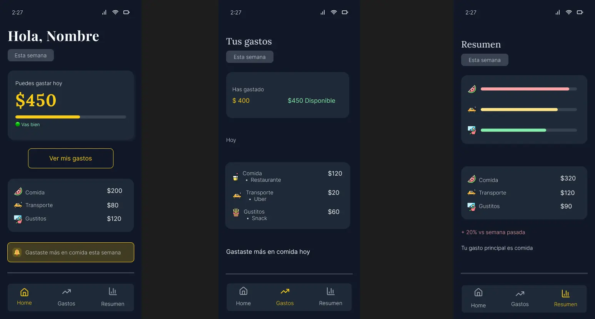
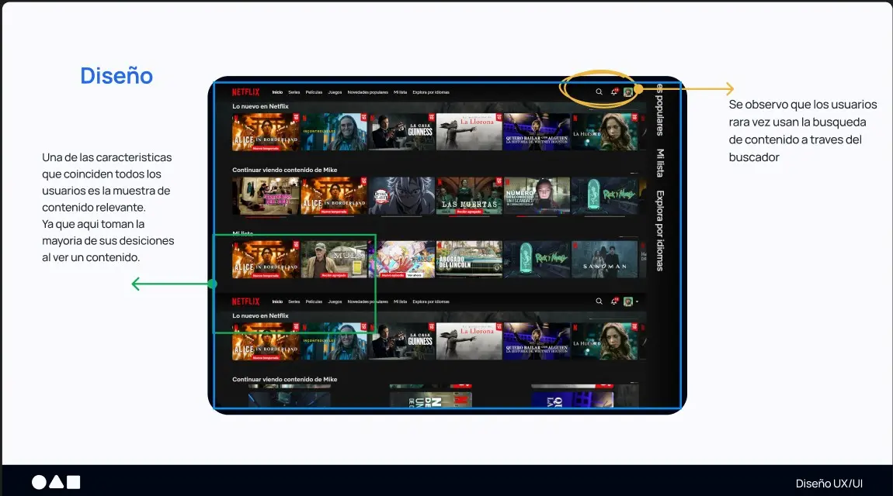
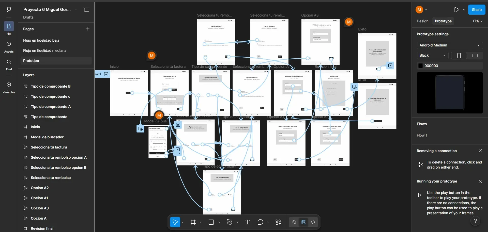
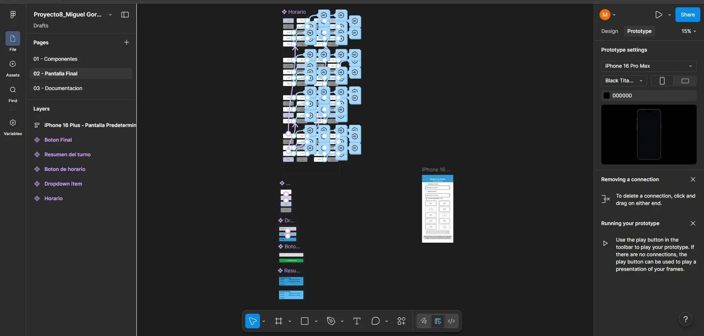

Miguel Goribar
Designing clear digital experiences for complex products.
I design research-driven interfaces that help users understand information, reduce confusion, and make confident decisions — especially in fintech and product environments.

UX Case Studies
Designed a mobile finance product for people with variable income, focused on helping users understand what is safe to spend today instead of relying only on bank balance.

Conducted user interviews and built a structured research brief to identify user pain points, behavioral patterns, and opportunities for clearer product decisions.

Designed user flows and iterative wireframes, moving from low-fidelity sketches to interactive prototypes that make the experience easier to understand and test.

Created a scalable component system based on Atomic Design principles to improve consistency, reusability, and efficiency across interfaces.
User-centered designer focused on clarity
I’m a UX/UI Designer focused on creating clear and intuitive digital experiences. I combine research, usability testing, and iterative design to understand real user problems and turn insights into effective solutions.
My approach is driven by clarity: reducing complexity, guiding decisions, and helping users act with confidence.
With a technical background in C++ and Java, I can understand system constraints, structure complex problems, and collaborate more effectively with technical teams.
From insight to interface
- Understand the user problem before jumping into screens.
- Translate research into clear flows, wireframes, and prototypes.
- Validate ideas through usability testing and measurable feedback.
- Iterate based on evidence, not assumptions.
Let’s build better user experiences together
Open to UX/UI design opportunities, collaborations, and freelance projects.
Send EmailConnect on LinkedIn